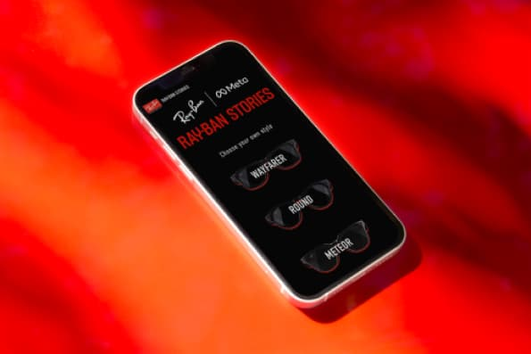

Ray-Ban Stories Website

The mobile redesign of Ray-Ban Stories' website focuses on improving information presentation across landing, discovery, and product pages. Design decisions are backed by user testing research, resulting in enhanced navigation, a distinct UI identity, and an improved customer experience.
Project supervised by profs. Marco Catani and Enrico Di Giglia for the UX Design subject.
Contributors: Mireia Falgueras, Elisa Orlandi, Andres Ossa, Virginia Pastore.